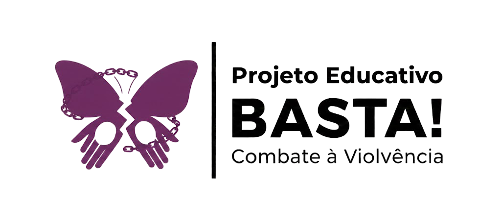
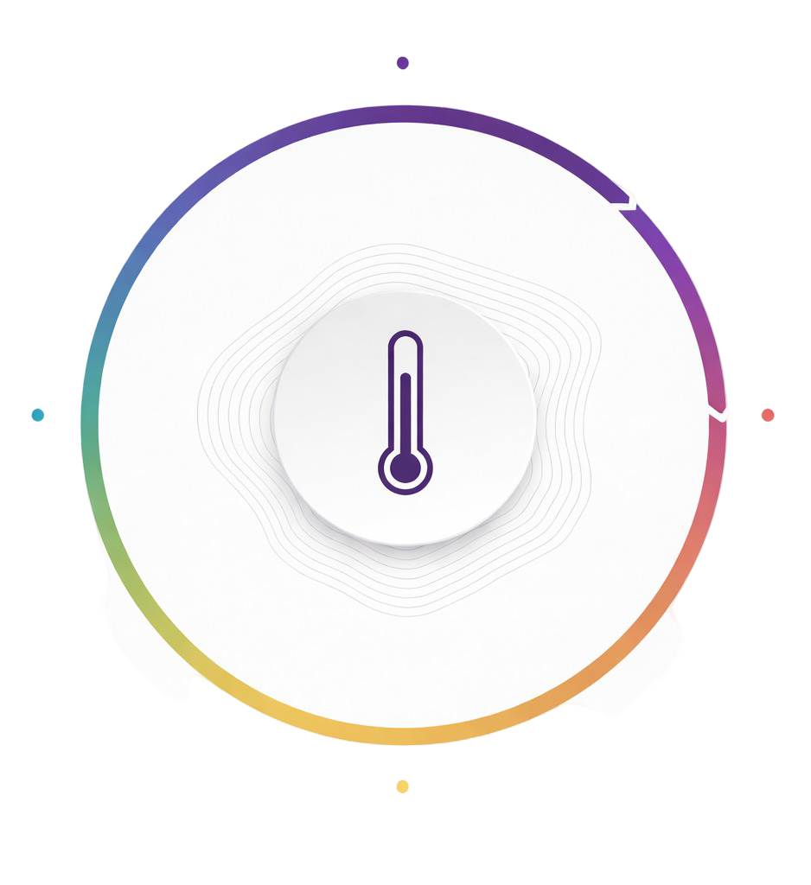
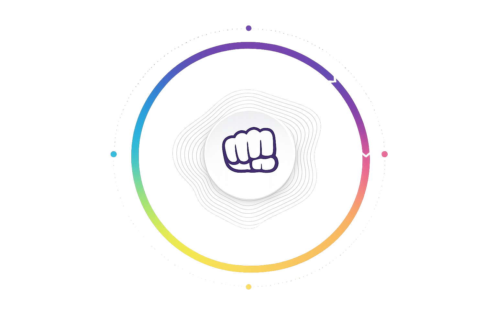

Aprenda a reconhecer as três principais fases do ciclo e compreenda como ele funciona.
Embora a violência doméstica apresente diferentes formas e particularidades, a psicóloga norte-americana Lenore Walker identificou que as agressões ocorridas no contexto conjugal seguem um ciclo que se repete continuamente.

Nesse estágio inicial, o agressor passa a demonstrar tensão e irritação por motivos aparentemente insignificantes, podendo apresentar explosões de raiva. Além disso, humilha a vítima, profere ameaças e danifica objetos.
A mulher procura acalmar o agressor, sente-se angustiada e evita qualquer atitude que possa “provocá-lo”. Os sentimentos são intensos e variados: tristeza, angústia, ansiedade, medo e decepção, entre outros.
De modo geral, a vítima tende a negar o que está acontecendo, omite os fatos das outras pessoas e, muitas vezes, acredita ter feito algo errado para justificar o comportamento violento do agressor ou pensa que “ele apenas teve um dia ruim no trabalho”, por exemplo. Essa tensão pode se prolongar por dias ou até anos; contudo, como se intensifica gradativamente, é bastante provável que a situação evolua para a Fase 2.

Essa etapa representa a explosão do agressor, momento em que a perda de controle atinge seu ápice e resulta no ato violento. Nela, toda a tensão acumulada na fase anterior se concretiza por meio de agressões que podem ser verbais, físicas, psicológicas, morais ou patrimoniais.
Ainda que reconheça que o agressor esteja fora de controle e represente uma ameaça significativa à sua vida, a mulher frequentemente se sente paralisada e incapaz de reagir. Nesse momento, vivencia intensa tensão psicológica, manifestada por sintomas como insônia, perda de peso, fadiga constante e ansiedade, além de experimentar sentimentos de medo, ódio, solidão, autocompaixão, vergonha, confusão e dor.
Nesse contexto, ela pode tomar algumas decisões — as mais frequentes incluem buscar ajuda, formalizar denúncia, refugiar-se na casa de amigos ou familiares, solicitar a separação e, em situações extremas, atentar contra a própria vida. Em geral, ocorre um afastamento do agressor.